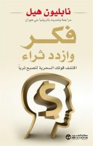

فكر وازدد ثراء

كتاب "فكر وازدد ثراء" أو "فكر تصبح غنيا"
في جميع أنحاء العالم ،هناك الآلاف من الرجال والنساء الذين أصبحو ناجحين اليوم بفضل إقتناءهم لنسخة من كتاب فكر تصبح غنيا لنابليون هيل، من دون شك، كان هذا كتاب واحد من أكثر الكتب التى له تأثير على الحياة والإنجازات وحظوظ الناس أكثر من أي عمل آخر من نوعه.
ساعد هذا الكتاب الرائع الكثيرين على تحقيق أهدافهم ، بمجرد وصولك لقراءة الصفحة الأخيرة من الكتاب وقبل أن تضع الكتاب على الطاولة ستتحول إلى رجل مختلف ، وهو رجل حائز على المعرفة الفريدة التي من شأنها تمكينه من تحويل الأحلام إلى واقع، والأفكار إلى أشياء ملموسة، هو الذي كان أحد الركاب وهو الآن فجأة أصبح قبطان سفينة حياته .